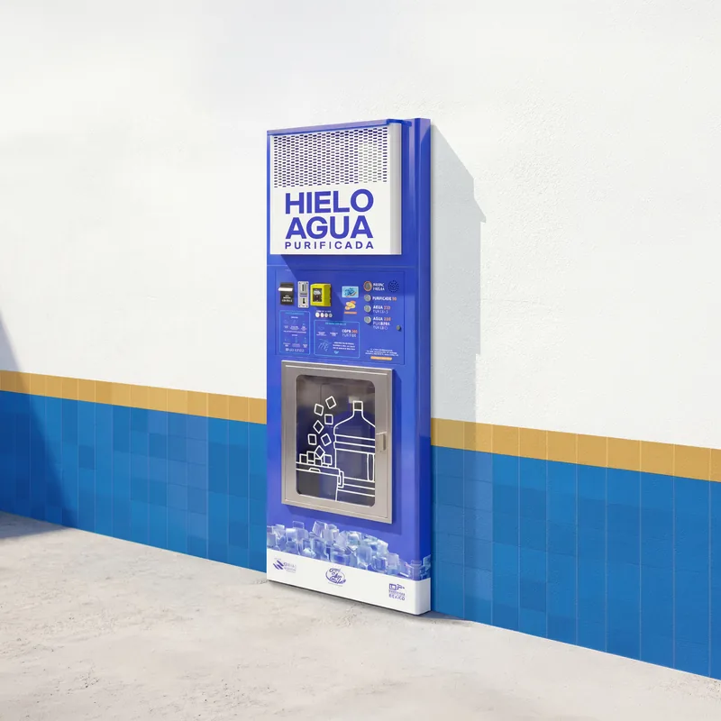
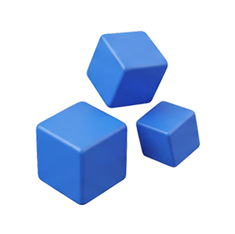
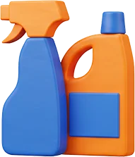
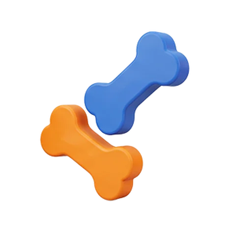
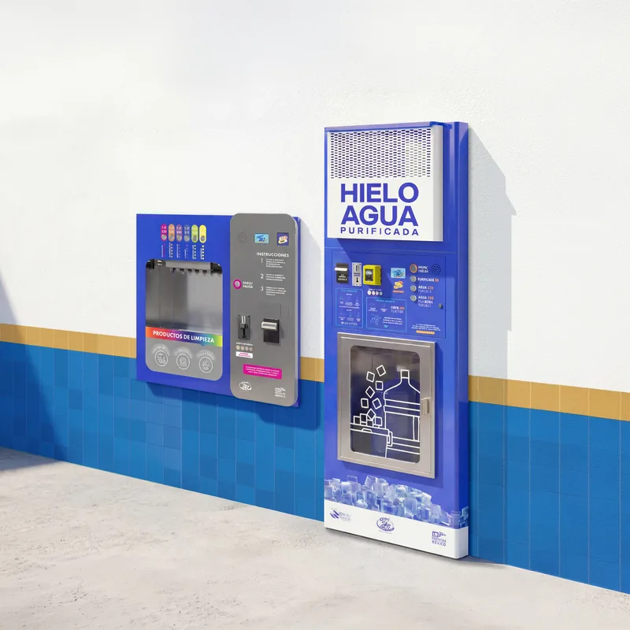
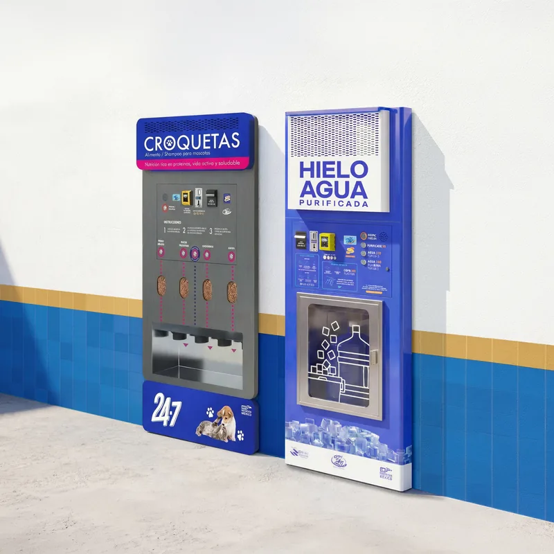
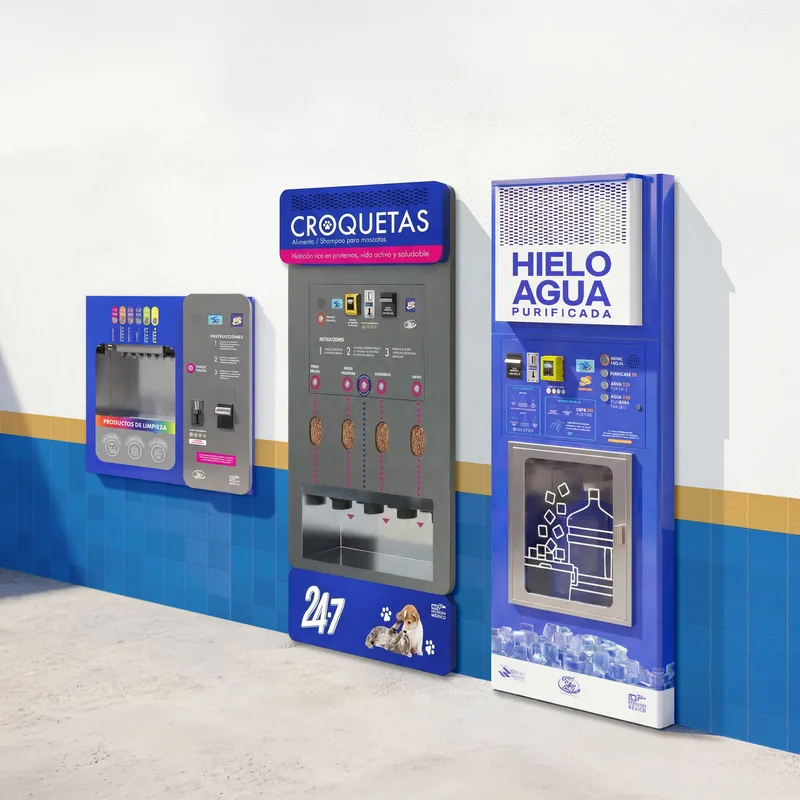

Modelo
Kiosko Dúo
Sistema de purificación de agua
y ventana automatizada de hielo y agua empotrable en muro.
Hazlo posible con nuestro modelo de franquicia con equipos vending 24-7



Invierte en un modelo de negocio que integra diferentes soluciones de vending en una sola propuesta comercial. Amplía tus oportunidades de ingreso con equipos diseñados para operar de forma automatizada, sin necesidad de contratar personal para la atención continua.
Con el respaldo de A Granel 24-7, accede a tecnología desarrollada en México y a una propuesta que te permite atender distintas necesidades del mercado con un solo modelo de franquicia.
Un modelo de franquicia que se adapta a tu espacio y a tus necesidades

Sistema de purificación de agua
y ventana automatizada de hielo y agua empotrable en muro.

Sistema de purificación de agua
y ventana automatizada de hielo y agua, y ventana de limpieza de 6 productos empotrables en muro.

Sistema de purificación de agua
y ventana automatizada de hielo y agua, y ventana de croquetas de 4 productos empotrables en muro.

Sistema de purificación de agua
y ventana automatizada de hielo y agua, ventana de croquetas de 4 productos y ventana de limpieza de 6 productos empotrables en muro.
NOTA IMPORTANTE
Este documento, sus contenidos, archivos adjuntos y referencias a otros archivos o direcciones electrónicas son de carácter informativo.
No representan ni deben entenderse de ninguna manera como una oferta comercial ni promesa de ningún tipo sobre el otorgamiento de una franquicia de A GRANEL 24-7 ni respecto de la marca registrada A granel 24-7®.
La información contenida en los mismos, es solamente una referencia y los datos numéricos representan ejemplos y supuestos del comportamiento de un negocio bajo condiciones normales de operación y en su etapa de madurez, no representan promesas sobre el nivel de ventas ni promesas sobre resultados actuales o futuros.
Los montos de la inversión en infraestructura se calcularon tomando en cuenta el proyecto arquitectónico modelo para una unidad estándar, y podrá variar una vez determinado el proyecto definitivo a desarrollar de acuerdo al sitio propuesto y las condiciones del mismo.
1. Completa el formulario que encuentras en esta página para recibir la presolicitud; una vez completada, deberá ser enviada a franquicias@agranel24-7.com.
2. Posteriormente te enviaremos un cuestionario, el cual nos permite hacer la primera evaluación de los candidatos a la franquicia A GRANEL 24-7.
3. Después de revisar la información te contactaremos vía telefónica o por e-mail para informarte el resultado.
4. Una vez que tu solicitud fue aprobada, se programará una entrevista para reunir documentación, aclarar dudas y definir tiempos de arranque.
El franquiciatario es la persona que adquiere los derechos para explotar la marca de A GRANEL 24-7.
Escríbenos y un asesor de franquicias resolverá esta duda de acuerdo con el modelo que te interese.
Escríbenos y un asesor de franquicias resolverá esta duda de acuerdo con el modelo que te interese.
Escríbenos y un asesor de franquicias resolverá esta duda de acuerdo con el modelo que te interese.
Escríbenos y un asesor de franquicias resolverá esta duda de acuerdo con el modelo que te interese.
Escríbenos y un asesor de franquicias resolverá esta duda de acuerdo con el modelo que te interese.